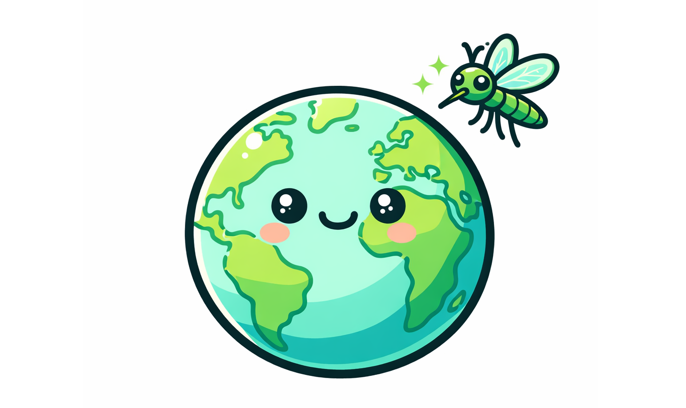

Mosquito Tracker
An ultra-light redesign of NASA's GLOBE Observer app with offline-first field data collection and client-side WebP compression — built to work in remote areas with no connectivity.
Overview
NASA's GLOBE Observer is used by citizen scientists worldwide to log environmental observations — but its original app struggled in low-bandwidth and offline scenarios common in field research. Mosquito Tracker reimagines the app from the ground up with a focus on performance and reliability.
The app compresses images to WebP format entirely on the client before any upload attempt, dramatically reducing data usage. All observation data is queued locally using IndexedDB and synced automatically when connectivity is restored, ensuring no data loss during remote fieldwork.
Key Features
Offline-first architecture — observations persist locally and sync in the background once a connection is available.
Client-side WebP compression — images are processed before upload, cutting bandwidth usage by up to 70%.
Lightweight build — Astro's static output and Svelte's compiled components keep the bundle minimal for fast load times on mobile networks.